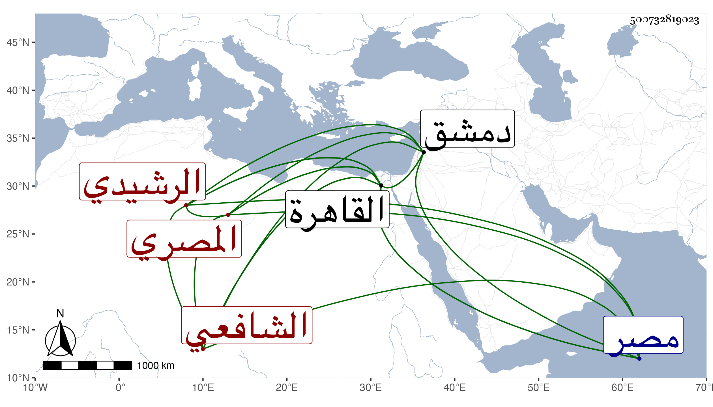

0902Sakhawi.DawLamic.ITO20230111-ara1.EIS1600.500732819023
Biography ID: 500732819023
319
عبد الرحمن بن محمد بن إبراهيم بن محمد بن لاجين الزين أبو محمد الرشيدي الأصل المصري الشافعي أخو عبد الله الآتي ويعرف بالرشيدي . ولد سنة إحدى وأربعين وسبعمائة بالقاهرة وأسمع علي الميدومي ومحمد بن اسماعيل الأيوبي وغيرهما بالقاهرة ومن ابن أميلة وعمر بن زباطر وغيرهما بدمشق وأجاز له من سيذكر في أخيه ، واشتغل بالفرائض والحساب والمواقيت وشرح الجعبرية والأشنهية والياسمينية وغيرها وله تصنيف في نيل مصر ، وحدث ودرس سمع منه الفضلاء قرأ عليه شيخنا وذكره في معجمه وروي لنا هو وابن أخيه وغيرهما عنه وكان خيرا ذا يد طولى في الفرائض والميقات ولي الرياسة فيه ببعض الأماكن والخطابة بجامع أمير حسين وكانت لقراءته ونغمته حلاوة ولم يكن ماهرا ، قال التقي بن قاضي شهبة وقفت على شرحه وفيه أوهام عجيبة ، مات في يوم الثلاثاء ثاني جمادى الأولى أو الثانية سنة ثلاث وجزم المقريزي في عقوده بالثاني رحمه الله .
